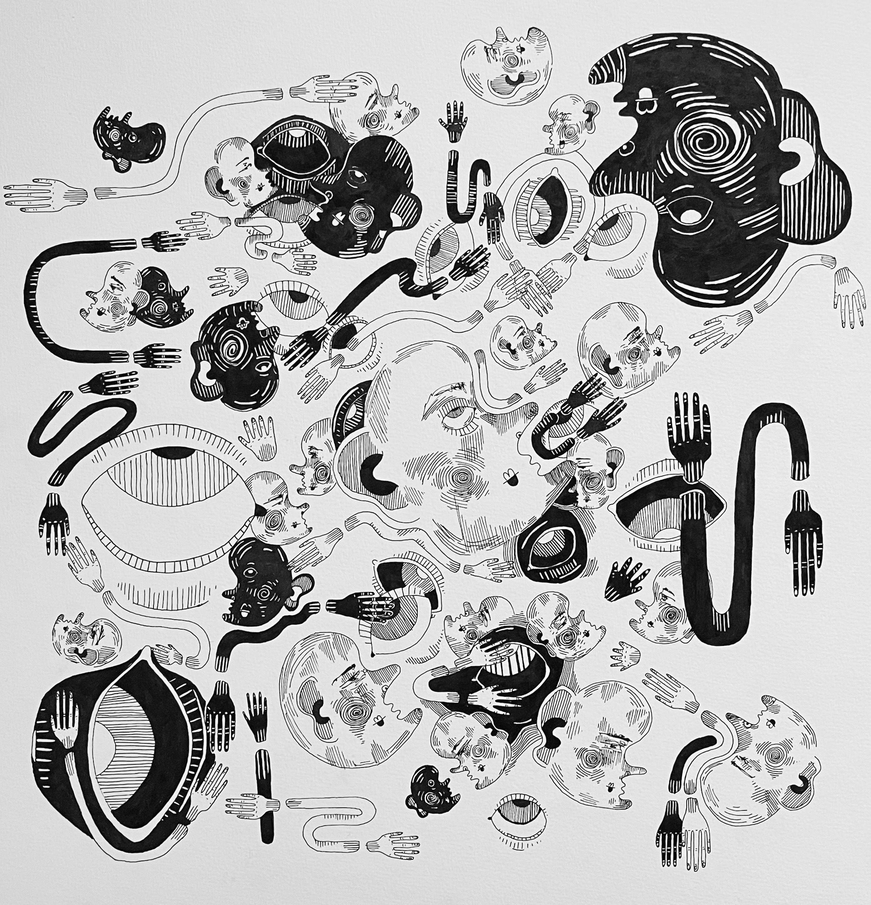
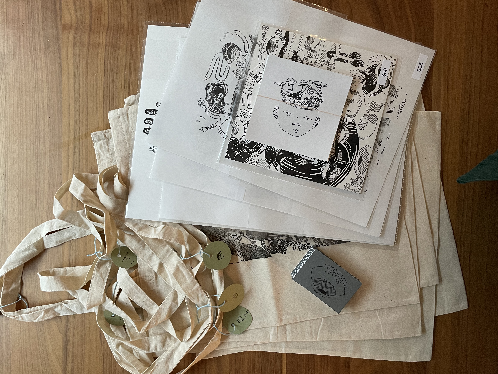
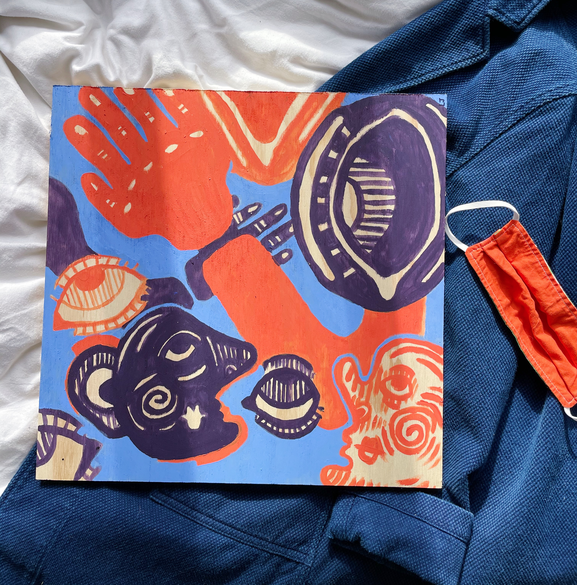
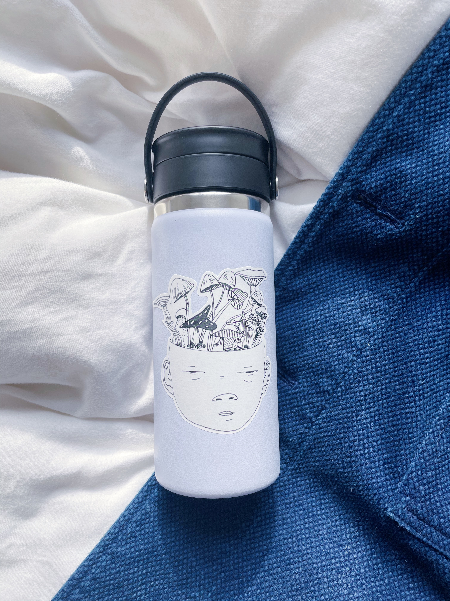

My Art Series
A project I have been exploring lately is called "My Back Self", I incorporate my deatiled ink skills and creativity, to visualize what I am like inside. These pieces are supposed to represent my funkier side of myself that i do not show to others.
See my work on instagram

My Tote Bags
I make designs on tote bags using linocut printing, they have been the most popular out of my designs. Promoting my totes by using the hashtag #lomotote 's has also helped get the word out about my business
See my work on instagram
My Commissions Are Open
Message me on instagram or via email if you'd like to have a commissions done, i can do anything for you!
Contact MeStickers,Prints and More
I am known for my affordable and diverse art. Making totes, stickers and soon a clothing line. @Lomojoartsitup is far from boring. See what im working on, on instagram!!


